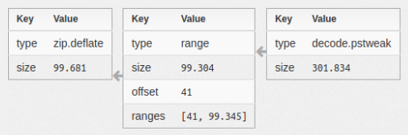

Data Transformations
Extraction Plugins can create new data-streams on a Trace through data transformations. Data transformations describe how data can be obtained from a source. Data transformations are preferred over storing blobs because they take less space. This is because they only describe the data instead of specifying the actual data.
The following figure shows how Hansken visualizes data transformations:
{kind=link}
Note that transformations can be applied on transformations. The SDK only supports range transformations at the moment, while this image also shows some transformations that are currently available in Hansken but not in the SDK.
An example case is an extraction plugin that processes an archive file. The plugin creates a child trace per entry in the archive file. Each child trace will have a data stream that is a transformation that marks the start and length of the entry in the original archive data. By just describing the data instead of specifying the actual data, a lot of space is saved.
Although Hansken supports various transformations, the Extraction Plugins SDK for now only supports ranged data transformations. Ranged data transformations define data as a list of ranges, each range with an offset and length in a bytearray.